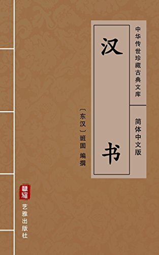

第41卷#

【樊郦滕灌傅靳周传第十一】
樊哙，沛人也，以屠狗为事。后与高祖俱隐于芒砀山泽间。
陈胜初起，萧何、曹参使哙求迎高祖，立为沛公。哙以舍人从攻胡陵、方与，还守丰，击泗水临丰下，破之。复东定沛，破泗水守薛西。与司马□战砀东，却敌，斩首十五级，赐爵国大夫。常从，沛公击章邯军濮阳，攻城先登，斩首二十三级，赐爵列大夫。从攻城阳，先登。下户牖，破李由军，斩首十六级，赐上闻爵。后攻圉都尉、东郡守尉于成武，却敌，斩首十四级，捕虏十六人，赐爵五大夫。从攻秦军，出亳南。河间守军于杠里，破之。击破赵贲军开封北，以却敌先登，斩候一人，首六十八级，捕虏二十六人，赐爵卿。从攻破扬熊于曲遇。攻宛陵，先登，斩首八级，捕虏四十四人，赐爵封号贤成君。从攻长社、□辕，绝河津，东攻秦军尸乡，南攻秦军于□。破南阳守齮于阳城。东攻宛城，先登。西至郦，以却敌，斩首十四级，捕虏四十人，赐重封。攻武关，至霸上，斩都尉一人，首十级，捕虏百四十六人，降卒二千九百人。
项羽在戏下，欲攻沛公。沛公从百余骑因项伯面见项羽，谢无有闭关事。项羽既飨军士，中酒，亚父谋欲杀沛公，令项庄拔剑舞坐中，欲击沛公，项伯常屏蔽之。时，独沛公与张良得入坐，樊哙居营外，闻事急，乃持盾入。初入营，营卫止哙，哙直撞入，立帐下。项羽目之，问为谁。张良曰：「沛公参乘樊哙也。」项羽曰：「壮士！」赐之卮酒彘肩。哙既饮酒，拔剑切肉食之。项羽曰：「能复饮乎？」哙曰：「臣死且不辞，岂特卮酒乎！且沛公先人定咸阳，暴师霸上，以待大王。大王今日至，听小人之言，与沛公有隙，臣恐天下解心疑大王也！」项羽默然。沛公如厕，麾哙去。既出，沛公留车骑，独骑马，哙等四人步从，从山下走归霸上军，而使张良谢项羽。羽亦因遂已，无诛沛公之心。是日微樊哙奔入营谯让项羽，沛公几殆。
后数日，项羽入屠咸阳，立沛公为汉王。汉王赐哙爵为列侯，号临武侯。迁为郎中，从入汉中。
还定三秦，别击西丞白水北，雍轻车骑雍南，破之。从攻雍、□城，先登。击章平军好畤，攻城，先登陷阵，斩县令丞各一人，首十一级，虏二十人，迁为郎中骑将。从击秦车骑壤东，却敌，迁为将军。攻赵贲，下□、槐里、柳中、咸阳；灌废丘，最。至栎阳，赐食邑杜之樊乡。从攻项籍，屠煮枣，击破王武、程处军于外黄。攻邹、鲁、瑕丘、薛。项羽败汉王于彭城，尽复取鲁、梁地。哙还至荥阳，益食平阴二千户，以将军守广武一岁。项羽引东，从高祖击项籍，下阳夏，虏楚周将军卒四千人。围项籍陈，大破之。屠胡陵。
项籍死，汉王即皇帝位，以哙有功，益食邑八百户。其秋，燕王臧荼反，哙从攻虏荼，定燕地。楚王韩信反，哙从至陈，取信，定楚。更赐爵列侯，与剖符，世世勿绝，食舞阳，号为舞阳侯，除前所食。以将军从攻反者韩王信于代。自霍人以往至云中，与绛侯等共定之，益食千五百户。因击陈豨与曼丘臣军，战襄国，破柏人，先登，降定清河、常山凡二十七县，残东垣，迁为左丞相。破得綦母卯、尹潘军于无终、广昌。破豨别将胡人王黄军代南，因击韩信军参合。军所将卒斩韩信，击豨胡骑横谷，斩将军赵既，虏代丞相冯梁、守孙奋、大将王黄、将军一人、太仆解福等十人。与诸将共定代乡邑七十三。后燕王卢绾反，哙以相国击绾，破其丞相抵蓟南，定燕县十八、乡邑五十一。益食千三百户，定食舞阳五千四百户。从，斩首百七十六级，虏二百八十七人。别，破军七，下城五，定郡六、县五十二，得丞相一人，将军十三人，二千石以下至三百石十二人。
哙以吕后弟吕须为妇，生子伉，故其比诸将最亲。先黥布反时，高帝尝病，恶见人，卧禁中，诏户者无得入群臣。群臣绛、灌等莫敢人。十余日，哙乃排闼直入，大臣随之。上独枕一宦者卧。哙等见上，流涕曰：「始，陛下与臣等起丰沛，定天下，何其壮也！今天下已定，又何惫也！且陛下病甚，大臣震恐，不见臣等计事，顾独与一宦者绝乎？且陛下独不见赵高之事乎？」高帝笑而起。
其后卢绾反，高帝使哙以相国击燕。是时，高帝病甚，人有恶哙党于吕氏，即上一日宫车晏驾，则哙欲以兵尽诛戚氏、赵王如意之属。高帝大怒，乃使陈平载绛侯代将。而即军中斩哙。陈平畏吕后，执哙诣长安。至则高帝已崩，吕后释哙，得复爵邑。
孝惠六年，哙薨，谥曰武侯，子伉嗣。而伉母吕须亦为临光侯，高后时用事颛权，大臣尽畏之。高后崩，大臣诛吕须等，因诛伉，舞阳侯中绝数月。孝文帝立，乃复封哙庶子市人为侯，复故邑。薨，谥曰荒侯。子佗广嗣。六岁，其舍人上书言：「荒侯市人病不能为人，令其夫人与其弟乱而生佗广，佗广实非荒侯子。」下吏，免。平帝元始二年，继绝世，封哙玄孙之子章为舞阳侯，邑千户。
郦商，高阳人也。陈胜起，商聚少年得数千人。沛公略地六月余，商以所将四千人属沛公于岐。从攻长社，先登
，赐爵封信成君。从攻缑氏，绝河津，破秦军雒阳东。从下宛、穰，定十七县。别将攻旬关，西定汉中。
沛公为汉王，赐商爵信成侯，以将军为陇西都尉。别定北地郡，破章邯别将于乌氏、□邑、泥阳，赐食邑武城六千户。从击项籍军，与钟离□战，受梁相国印，益食四千户。从击项羽二岁，攻胡陵。
汉王即帝位，燕王臧荼反，商以将军从击荼，战龙脱，先登陷阵，破荼军易下，却敌，迁为右丞相，赐爵列侯，与剖符，世世勿绝，食邑涿郡五千户。别定上谷，因攻代，受赵相国印。与绛侯等定代郡、雁门，得代丞相程纵、守相郭同、将军以下至六百石十九人。还，以将军将太上皇卫一岁。十月，以右丞相击陈豨，残东垣。又从击黥布，攻其前垣，陷两阵，得以破布军，更封为曲周侯，食邑五千一百户，除前所食。凡别破军三，降定郡六，县七十三，得丞相、守相、大将各一人，小将二人，二千石以下至六百石十九人。
商事孝惠帝、吕后。吕后崩，商疾不治事。其子寄，字况，与吕禄善。及高后崩，大臣欲诛诸吕，吕禄为将军，军于北军，太尉勃不得入北军，于是乃使人劫商，令其子寄绐吕禄。吕禄信之，与出游，而太尉勃乃得入据北军，遂以诛诸吕。商是岁薨，谥曰景侯。子寄嗣。天下称郦况卖友。
孝景时，吴、楚、齐、赵反，上以寄为将军，围赵城，七月不能下，栾布自平齐来，乃灭赵。孝景中二年，寄欲取平原君为夫人，景帝怒，下寄吏，免。上乃封商它子坚为缪侯，奉商后。传至玄孙终根，武帝时为太常，坐巫蛊诛，国除。元始中，赐高祖时功臣自郦商以下子孙爵皆关内侯，食邑凡百余人。
夏侯婴，沛人也。为沛厩司御，每送使客，还过泗上亭，与高祖语，未尝不移日也。婴已而试补县吏，与高祖相爱。高祖戏而伤婴，人有告高祖。高祖时为亭长，重坐伤人，告故不伤婴，婴证之。移狱复，婴坐高祖系岁余，掠笞数百，终脱高祖。
高祖之初与徒属欲攻沛也，婴时以县令史为高祖使。上降沛一日，高祖为沛公，赐爵七大夫，以婴为太仆，常奉车。从攻胡陵，婴与萧何降泗水监平，平以胡陵降，赐婴爵五大夫。从击秦军砀东，攻济阳，下户牖，破李由军雍丘，以兵车趣攻战疾，破之，赐爵执帛。从击章邯军东阿、濮阳下，以兵车趣攻战疾，破之，赐爵执圭。从击赵贲军开封，杨熊军曲遇。婴从捕虏六十八人，降卒八百五十人，得印一匮。又击秦军雒阳东，以兵车趣攻战疾，赐爵封，转为膝令。因奉车从攻定南阳，战于蓝田、芷阳，至霸上。沛公为汉王，赐婴爵列侯，号昭平侯，复为太仆，从入蜀汉。
还定三秦，从击项籍。至鼓城，项羽大破汉军。汉王不利，驰去。见孝惠、鲁元，载之。汉王急，马罢，虏在后，常跋两兒弃之，婴常收载行，面雍树驰。汉王怒，欲斩婴者十余，卒得脱，而致孝惠、鲁元于丰。汉王既至荥阳，收散兵，复振，赐婴食邑沂阳。击项籍下邑，追至陈，卒定楚。至鲁，益食兹氏。
汉王即帝位，燕王臧荼反，婴从击荼。明年，从至陈，取楚王信。更食汝阴，剖符，世世勿绝。从击代，至武泉、云中，益食千户。因从击韩信军胡骑晋阳旁，大破之。追北至平城，为胡所围，七日不得通。高帝使使厚遗阏氏，冒顿乃开其围一角。高帝出欲驰，婴固徐行，弩皆持满外乡，卒以得脱。益食婴细阳千户。从击胡骑句注北，大破之。击胡骑平城南，三陷陈，功为多，赐所夺邑五百户。从击陈豨、黥布军，陷陈却敌，益千户，定食汝阴六千九百户，降前所食。
婴自上初起沛，常为太仆从，竟高祖崩。以太仆事惠帝。惠帝及高后德婴之脱孝惠、鲁元于下邑间也，乃赐婴北第第一，曰「近我」，以尊异之。惠帝崩，以太仆事高后。高后崩，代王之来，婴以太仆与东牟侯入清宫，废少帝，以天子法驾迎代王代邸，与大臣共立文帝，复为太仆。八岁薨，谥曰文侯。传至曾孙颇，尚平阳公主，坐与父御婢奸。自杀，国除。
初，婴为藤令奉车，故号滕公。及曾孙颇尚主，主随外家姓，号孙公主，故滕公子孙更为孙氏。
灌婴，睢阳贩缯者也。高祖为沛公，略地至雍丘，章邯杀项梁，而沛公还军于砀，婴以中涓从，击破东郡尉于成武及秦军于杠里，疾斗，赐爵七大夫。又从攻秦军亳南、开封、曲遇，战疾力，赐爵执帛，号宣陵君。从攻阳武以西至雒阳，破秦军尸北。北绝河津，南破南阳守齮阳城东，遂定南阳郡。西入武关，战于蓝田，疾力，至霸上，赐爵执圭，号昌文君。
沛公为汉王，拜婴为郎中，从入汉中，十月，拜为中谒者。从还定三秦，下栎阳，降塞王。还围章邯废丘，未拔。从东出临晋关，击降殷王，定其地。击项羽将龙且、魏相项佗军定陶南，疾战，破之。赐婴爵列侯，号昌文侯。
复以中谒者从降下砀，以北至彭城。项羽击破汉王，汉王遁而西，婴从还，军于雍丘。王武、魏公申徒反，从击破之。攻下外黄，西收军于荥阳。楚骑来众，汉王乃择军中可为骑将者；
皆推故秦骑士重泉人李必、骆甲习骑兵，今为校尉，可为骑将。汉王欲拜之，必、甲曰：「臣故秦民，恐军不信臣，臣愿得大王左右善骑者傅之。」婴虽少，然数力战，乃拜婴为中大夫，令李必、骆甲为左右校尉，将郎中骑兵击楚骑于荥阳东，大破之。受诏别击楚军后，绝其饷道，起阳武至襄邑。击项羽之将项冠于鲁下，破之，所将卒斩右司马、骑将各一人。击破柘公王武军燕西，所将卒斩楼烦将五人，连尹一人。击王武别将桓婴白马下，破之，所将卒斩都尉一人。以骑度河南，送汉王到雒阳，从北迎相国韩信军于邯郸。还至敖仓，婴迁为御史大夫。
三年，以列侯食邑杜平乡。受诏将郎中骑兵东属相国韩信，击破齐军于历下，所将卒虏车骑将华毋伤及将吏四十六人。降下临淄，得相田光。追齐相田横至嬴、博，击破其骑，所将卒斩骑将一人，生得骑将四人。攻下嬴、博，破齐将军田吸于千乘，斩之。东从韩信攻龙且、留公于假密，卒斩龙且，生得右司马、连尹各一人，楼烦将十人，身生得亚将周兰。
齐地已定，韩信自立为齐王，使婴别将击楚将公杲于鲁北，破之。转南，破薛郡长，身虏骑将一人。攻傅阳，前至下相以东南僮、取虑、徐。度淮，尽降其城邑，至广陵。项羽使项声、薛公、郯公复定淮北，婴度淮击破顶声、郯公下邳，斩薛公，下下邳、寿春。击破楚骑平阳，遂降彭城。虏柱国项佗，降留、薛、沛、酂、萧、相。攻苦、谯，复得亚将。与汉王会颐乡。从击项籍军陈下，破之。所将卒斩楼烦将二人，虏将八人。赐益食邑二千五百户。
项籍败垓下去也，婴以御史大夫将车骑别追项籍至东城，破之。所将卒五人共斩项籍，皆赐爵列侯。降左右司马各一人，卒万二千人，尽得其军将吏。下东城、历阳。度江破吴郡长吴下，得吴守，遂定吴、豫章、会稽郡。还定淮北，凡五十二县。
汉王即帝位，赐益婴邑三千户。以车骑将军从击燕王荼。明年，从至陈，取楚王信。还，剖符世世勿绝，食颍阴二千五百户。
从击韩王信于代，至马邑，别降楼烦以北六县，斩代左将，破胡骑将于武泉北。复从击信胡骑晋阳下，所将卒斩胡白题将一人。又受诏将燕、赵、齐、梁、楚车骑，击破胡骑于硰石。至平城，为胡所困。
从击陈豨，别攻豨丞相侯敞军曲逆下，破之，卒斩敞及特将五人。降曲逆、卢奴、上曲阳、安国、安平。攻下东垣。黥布反，以车骑将军先出，攻布别将于相，破之，斩亚将楼烦将三人。又进击破布上柱国及大司马军。又进破布别将肥铢。婴身生得左司马一人，所将卒斩其小将十人，追北至淮上。益食邑二千五百户。布已破，高帝归，定令婴食颍阴五千户，除前所食邑。
凡从所得二千石二人，别破军十六，降城四十六，定国一、郡二、县五十二，得将军二人，柱国、相各一人，二千石十人。
婴自破布归，高帝崩，以列侯事惠帝及吕后。吕后崩，吕禄等欲为乱。齐哀王闻之，举兵西，吕禄等以婴为大将军往击之。婴至荥阳，乃与绛侯等谋，因屯兵荥阳，风齐王以诛吕氏事，齐兵止不前。绛侯等既诛诸吕，齐王罢兵归。婴自荥阳还，与绛侯、陈平共立文帝。于是益封婴三千户，赐金千斤，为太尉。三岁，绛侯勃免相，婴为丞相，罢太尉官。
是岁，匈奴大入北地，上令丞相婴将骑八万五千击匈奴。匈奴去，济北王反，诏罢婴兵。后岁余，以丞相薨，谥曰懿侯。传至孙强，有罪，绝。武帝复封婴孙贤为临汝侯，奉婴后，后有罪，国除。
傅宽，以魏五大夫骑将从，为舍人，起横阳。从攻安阳、杠里，赵贲军于开封，及击杨熊曲遇、阳武、斩首十二级，赐爵卿。从至霸上。沛公为汉王，赐宽封号共德君。从入汉中，为右骑将。定三秦，赐食邑雕阴。从击项籍，待怀，赐爵通德侯。从击项冠、周兰、龙且，所将卒斩骑将一人敖下，益食邑。
属淮阴，击破齐历下军，击田解。属相国参，残博，益食邑。因定齐地，剖符世世勿绝，封阳陵侯，二千六百户，除前所食。为齐右丞相，备齐。五岁，为齐相国。四月，击陈豨，属太尉勃，以相国代丞相哙击豨。一月，徙为代相国，将屯。二岁，为丞相，将屯。
孝惠五年，薨，谥曰景侯。传至曾孙偃，谋反，诛，国除。
靳歙，以中涓从，起宛朐。攻济阳。破李由军。击秦军开封东，斩骑千人将一人，首五十七级，捕虏七十三人，赐爵封临平君。又战蓝田北，斩车司马二人，骑长一人，首二十八级，捕虏五十七人。至霸上，沛公为汉王，赐歙爵建武侯，迁骑都尉。
从定三秦。别西击章平军于陇西，破之，定陇西六县，所将卒斩车司马、候各四人，骑长十二人。从东击楚，至彭城。汉军败还，保雍丘，击反者王武等。略梁地，别西击邢说军菑南，破之，身得说都尉二人，司马、候十二人，降吏卒四千六百八十人。破楚军荥阳东。食邑四千二百户。
别之河内，击赵贲军朝歌，破之，所将卒得骑将二人，车马二
百五十匹。从攻安阳以东，至棘蒲，下十县。别攻破赵军，得其将司马二人，候四人，降吏卒二千四百人。从降下邯郸。别下平阳，身斩守相，所将卒斩兵守、郡守各一人，降鄴。从攻朝歌、邯郸，又别击破赵军，降邯郸郡六县。还军敖仓，破项籍军成皋南，击绝楚饷道，起荥阳至襄邑。破项冠鲁下。略地东至鄫、郯、下邳，南至蕲、竹邑。击项悍济阳下。还击项籍军陈下，破之。别定江陵，降柱国、大司马以下八人，身得江陵王，致雒阳，因定南郡。从至陈，取楚王信，剖符世世勿绝，定食四千六百户，为信武侯。
以骑都尉从击代，攻韩信平城下，还军东垣。有功，迁为车骑将军，并将梁、赵、齐、燕、楚车骑，别击陈豨丞相敞，破之，因降曲逆。从击黥布有功，益封，定食邑五千三百户。
凡斩首九十级，虏百四十二人，别破军十四，降城五十九，定郡、国各一，县二十三，得王、柱国各一人，二千石以下至五百石三十九人。
高后五年，薨，谥曰肃侯。子亭嗣，有罪，国除。
周□，沛人也。以舍人从高祖起沛。至霸上，西入蜀汉，还定三秦，常为参乘，赐食邑池阳。从东击项羽荥阳，绝甬道，从出度平阴，遇韩信军襄国，战有利不利，终亡离上心。上以□为信武侯，食邑三千三百户。
上欲自击陈豨，□泣曰：「始秦攻破天下，未曾自行，今上常自行，是亡人可使者乎？」上以为「爱我」，赐入殿门不趋。十二年，更封□为崩阝城侯。
孝文五年，薨，谥曰贞侯。子昌嗣，有罪，国除。景帝复封□子应为郸侯，薨，谥曰康侯。子仲居嗣，坐为太常有罪，国除。
赞曰：仲尼称「犁牛之子骍且角，虽欲勿用，山川其舍诸？」言士不系于世类也。语曰「虽有兹基，不如逢时」，信矣！樊哙、夏侯婴、灌婴之徒，方其鼓刀、仆御、贩缯之时，岂自知附骥之尾，勒功帝籍，庆流子孙哉？当孝文时，天下以郦寄为卖友。夫卖友者，谓见利而忘义也。若寄，父为功臣而又执劫，虽催吕禄，以安社稷，谊存君亲，可也。